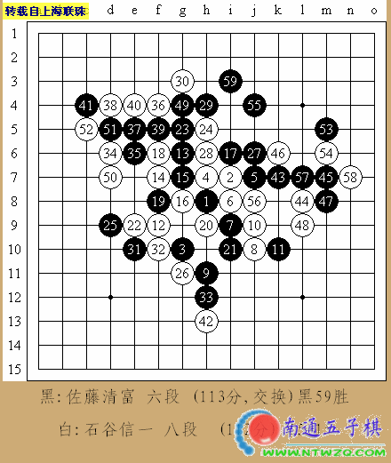
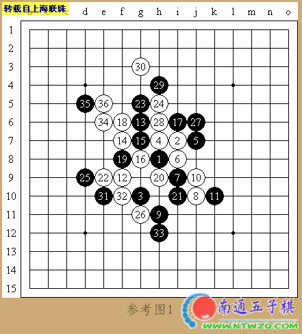
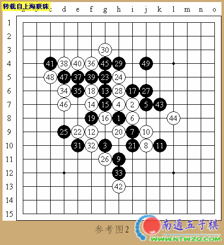

本局讲解的是第43期全日本名人战挑战者权决定赛中的一局。石谷信一八段对佐藤清富六段。近年来，随着以中村、奈良等为代表的一批老棋手淡出棋坛，以冈部、高岛为代表的新生代迅速崛起，逐渐在日本各大赛事中担起大梁。
石谷是一位老资格的棋手，实战经验丰富，不仅多次参加名人战挑战者权决定赛，而且还晋级第7届世界个锦赛A组参赛。客观的说，他绝对可以算作第二集团中的领军人物。尤其是最近几年，石谷如同一座火山，令人生畏。他不仅连续几届作为东海地区的代表参加名人赛挑战者决定赛，而且还囊括了近年来东海地区各类棋赛的冠军，堪称“东海第一高手”。佐藤虽然是新近崛起的青年棋手，但是他同冈部、高岛等一样，有个很明显的特点，就是精力旺盛，对流行变化比较熟悉。所以实战，其实就是经验对精力的较量。
是役，石谷执黑布局“名月”，佐藤交换。日本老一辈棋手在和年轻棋手较量中，非常喜欢采用桂马类开局考验对手的综合能力。而桂马类开局中，名月又是被采用最多的一种。白4是最强防，实战黑5是第2打点。白6到黑9是基本定式。白10最强，也有直接下在白12的，那是另外一种变化。实战的黑11方向正确，反向防守必败。在目前局面没有任何可以攻击的情况下，白12转身防御，黑棋抢得先手。黑13的一招有点突兀，并非本手。根据研究表明，黑13走在16位最好。白14非常机敏的一招，显示出了石谷丰富的经验。由此黑白双方在左边短兵相接，必将展开一场扣人心弦的撕杀。黑15防御在白16的位置也可以，实战的防御，佐藤可能是想保持今后同右边的联系。白16试应手，黑17绝对。如果黑17先18、后17，那么白棋将取得胜利。黑17组成潜在的“四.三”型，白18解除危险警报，黑19必然。白20好手，黑21又是必然。如此的几经转换，黑白在左边的战斗基本两分，白棋略微占据主动。黑21后，乍一看，白棋已经没有可以组织良好攻击的线路了。但是石谷是一位经验相当丰富的棋手，白22的防御，体现出了他良好的感觉和敏锐的计算力。佐藤长考后，走出了黑23的后中先手段，既消除了白棋两边联系的隐患，又巩固了黑棋的势力。白24正确的防御。小不忍则乱大谋，此时的白棋需要忍耐。当白棋防御后，黑25继续回来再防一手，限制了白棋的发展空间。白26是苦心的一招，含义深远。黑27开始的攻击主要是为了加固今后左边的黑棋势力。当白30终结了黑棋不断的VCF做棋后，黑31终于开始回防。白32活三，黑33的防守太想当然了。可惜白34没有抓住机会，否则白棋将取得胜利（见参考图1）。黑35后，可能石谷意识到了问题的严重性，既要处理好左边的局部，同时白棋还要有先手在下方防御。白36到40主要是为了稳固左边的局势。可惜，事与愿违，越是感觉上稳固，其实越是存在问题。白42的防御是无奈的一招。现在黑棋终于可以发挥它在右边经营许久的优势了。黑43横空出世的一手，事实上白棋已经没有任何方法化解这次的攻击了。白44最后的防御。奇怪的是，佐藤似乎以往了左边可以利用的手段，一味在右边用强，错过了一次简单胜（见参考图2）。黑45、白46交换后，佐藤又错失了第2次较为简单的胜法。索性，右边黑棋积累的优势实在难以撼动，最终，黑59手奠定了胜利。



/*760*90，创建于2012-2-9*/ var cpro_id = 'u761865';
字的颜色太淡了，朴素点，用纯黑的就好~